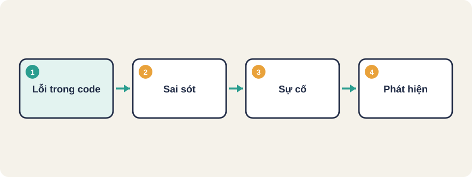
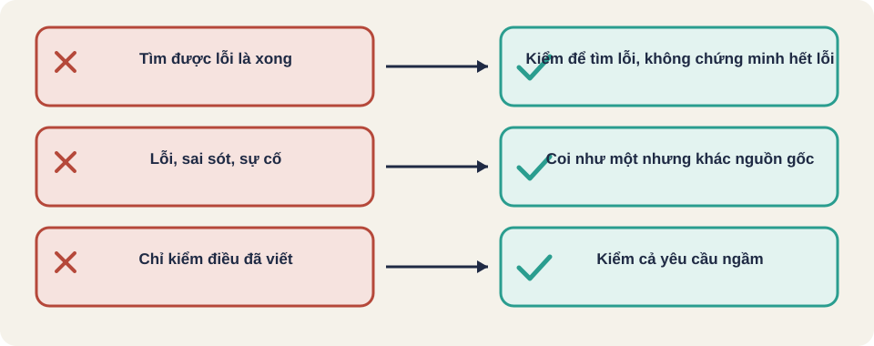

Hình vẽ gốc, dùng để minh họa thứ tự các bước chính của bài.
Lỗi, sai sót và sự cố khác nhau thế nào. Kiểm thử để tìm lỗi, không để chứng minh chương trình hết lỗi.

Hình vẽ gốc, dùng để minh họa thứ tự các bước chính của bài.
| Khái niệm | Nghĩa | Ví dụ |
|---|---|---|
| Sai sót (mistake) | Người viết code nhầm | Viết < thay cho <= |
| Lỗi (defect) | Chỗ trong code làm sai | Dòng so sánh đó nằm trong code |
| Sự cố (failure) | Người dùng thấy kết quả sai | Giảm giá thiếu 1 đồng |
Một sai sót sinh ra lỗi, lỗi chạy thì mới thành sự cố.
Thuật ngữ trong slide này: Lỗi (bug, defect): Chỗ sản phẩm làm khác với điều đúng hoặc điều đã được yêu cầu. Lỗi là trạng thái của code hoặc của sản phẩm. · Sai sót (mistake): Hành động sai của con người khi viết yêu cầu, thiết kế hoặc code. Sai sót sinh ra lỗi. · Sự cố (failure): Khi hệ thống đang chạy và làm sai hoặc dừng, do một lỗi bên trong gây ra. Sự cố là điều người dùng thấy.
Chạy 100 ca đều đúng không có nghĩa là chương trình không còn lỗi. Có thể ca lỗi nằm ở chỗ chưa ai thử.
Vì vậy mục tiêu của kiểm thử là tìm lỗi sớm và giảm rủi ro, không phải đạt điểm tuyệt đối.
int giam_gia(int gia) {
if (gia >= 100000)
return gia - gia / 10;
return gia;
}Hàm này nhận giá gốc (đồng), trả về giá sau giảm. Từ 100000 đồng trở lên giảm 10%.
Thử với gia = 50000: kết quả đúng là 50000.
Với gia = 100000, hàm trên trả về bao nhiêu? Với gia = 99999?
Viết đáp án ra giấy, rồi đọc trang sau.
gia = 100000 trả về 90000. gia = 99999 trả về 99999.
Ca 100000 là ca biên, nó nằm ngay trên ngưỡng. Bài 3 sẽ nói cách chọn những ca như vậy.

Thuật ngữ trong slide này: Sai sót (mistake): Hành động sai của con người khi viết yêu cầu, thiết kế hoặc code. Sai sót sinh ra lỗi. · Sự cố (failure): Khi hệ thống đang chạy và làm sai hoặc dừng, do một lỗi bên trong gây ra. Sự cố là điều người dùng thấy.
Lỗi (bug, defect)
Sai sót (mistake)
Sự cố (failure)
Ca kiểm thử (test case)
Thuật ngữ trong slide này: Sai sót (mistake): Hành động sai của con người khi viết yêu cầu, thiết kế hoặc code. Sai sót sinh ra lỗi. · Sự cố (failure): Khi hệ thống đang chạy và làm sai hoặc dừng, do một lỗi bên trong gây ra. Sự cố là điều người dùng thấy.
Một lỗi trong code không tự nhiên trở thành sự cố. Nó chỉ gây hại khi có người dùng chạm đúng đường đi chứa lỗi, với dữ liệu đúng kiểu đó.
Thuật ngữ trong slide này: Sự cố (failure): Khi hệ thống đang chạy và làm sai hoặc dừng, do một lỗi bên trong gây ra. Sự cố là điều người dùng thấy.
Hàm đúng yêu cầu: từ 100000 đồng trở lên giảm 10%.
gia = 100000. Kết quả mong đợi: 90000.gia = 99999. Kết quả mong đợi: 99999.> thay vì >=.Ghi lại: đầu vào, kết quả mong đợi, kết quả thực tế, và kết luận đạt hay không đạt.
Diễn giả nói kiểm thử phần mềm là học nhanh về sản phẩm. Ông cũng nói tester phải tìm độ phức tạp nằm dưới vẻ đơn giản bề ngoài.
Nguồn: James Bach, Open Lecture on Software Testing (YouTube ILkT_HV9DVU), phụ đề tự động. Quan điểm của diễn giả, không phải chuẩn chung.
Diễn giả đề nghị: "try the product to learn how it might not work". Mục tiêu không phải chứng minh sản phẩm đúng, mà tìm cách làm nó sai để học.
Nguồn: James Bach, Open Lecture on Software Testing (YouTube ILkT_HV9DVU), phụ đề tự động. Quan điểm của diễn giả, không phải chuẩn chung.
Nguồn: github.com/PaulWaltersDev/FreeLearningResourcesForSoftwareTesters, mục "Introduction to Testing". Tìm tên tài liệu trong repo để lấy liên kết.